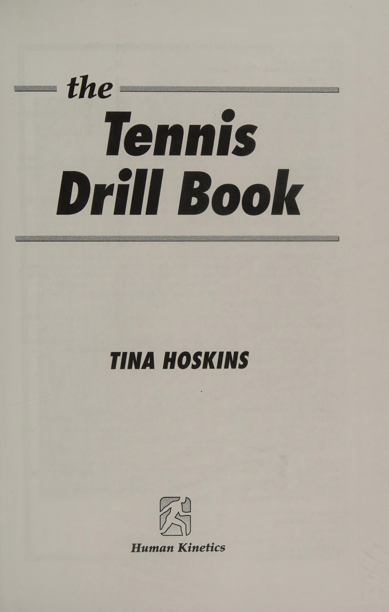
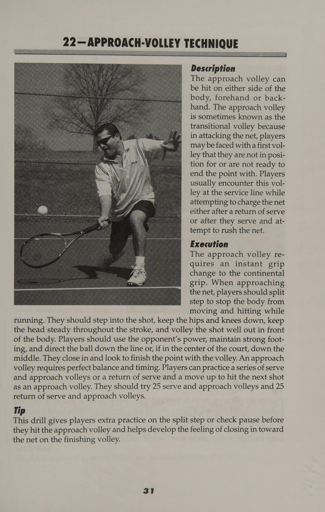
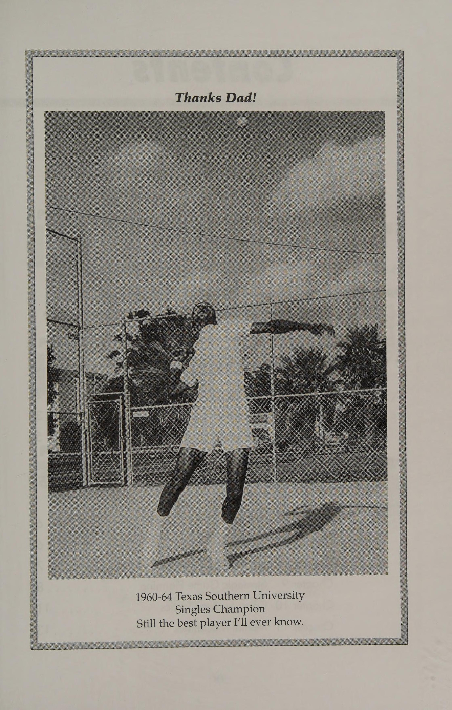
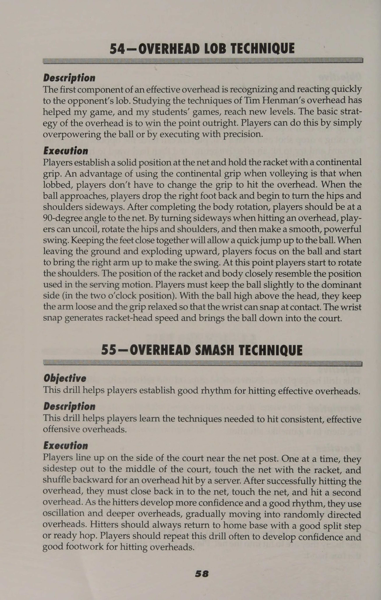
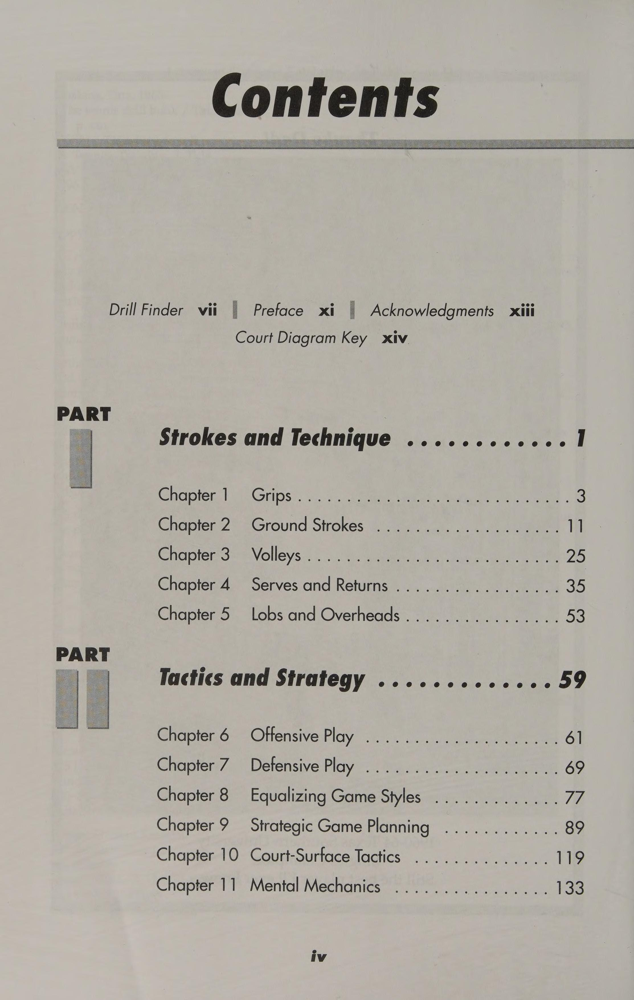
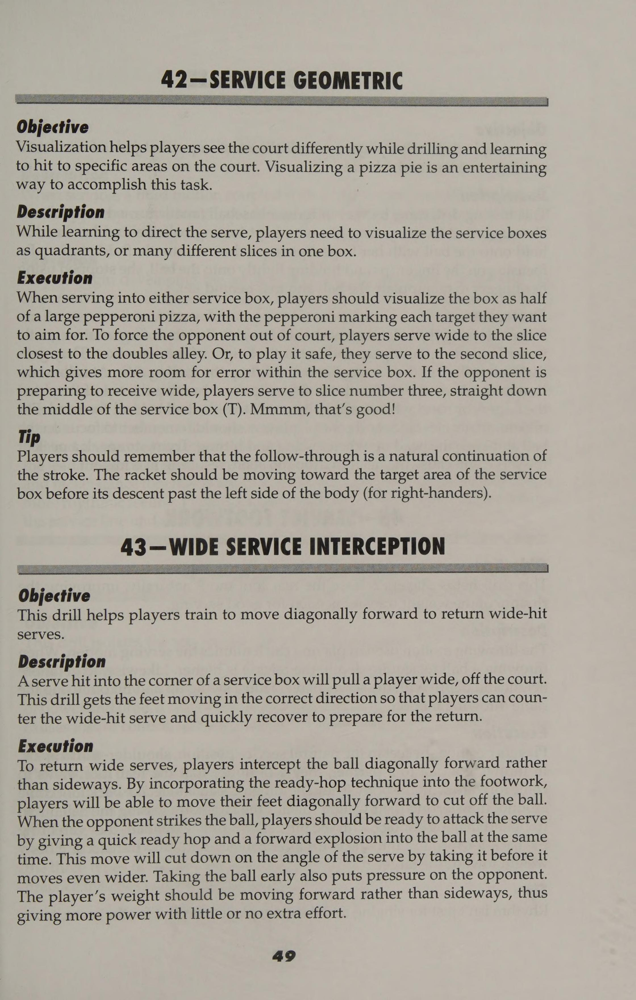
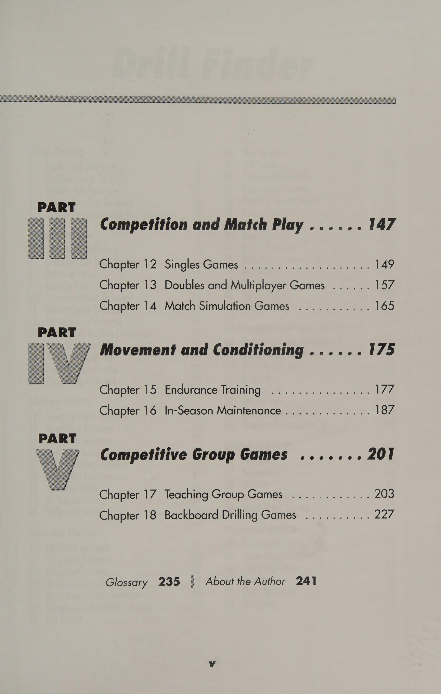
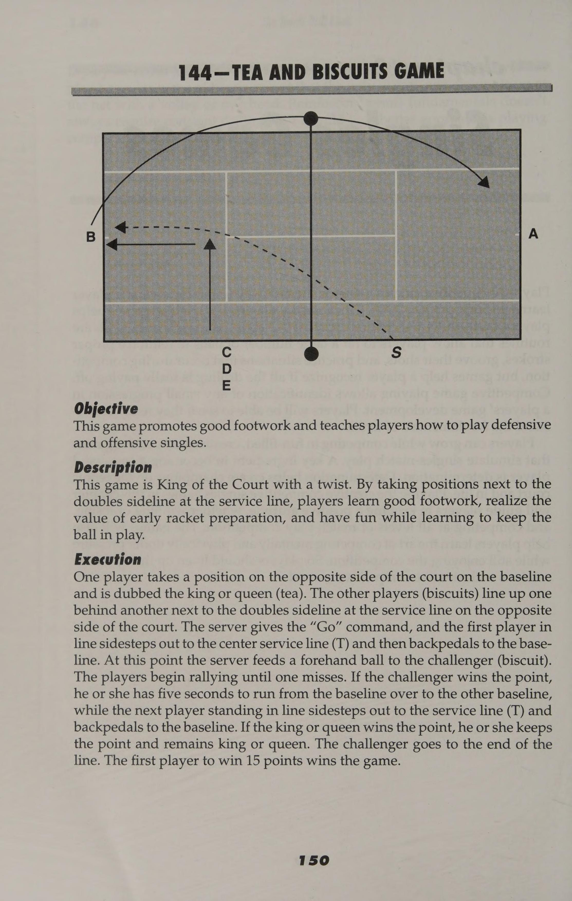
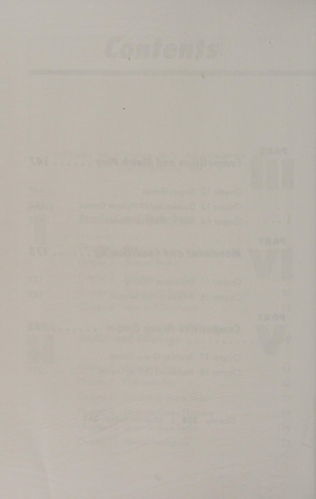
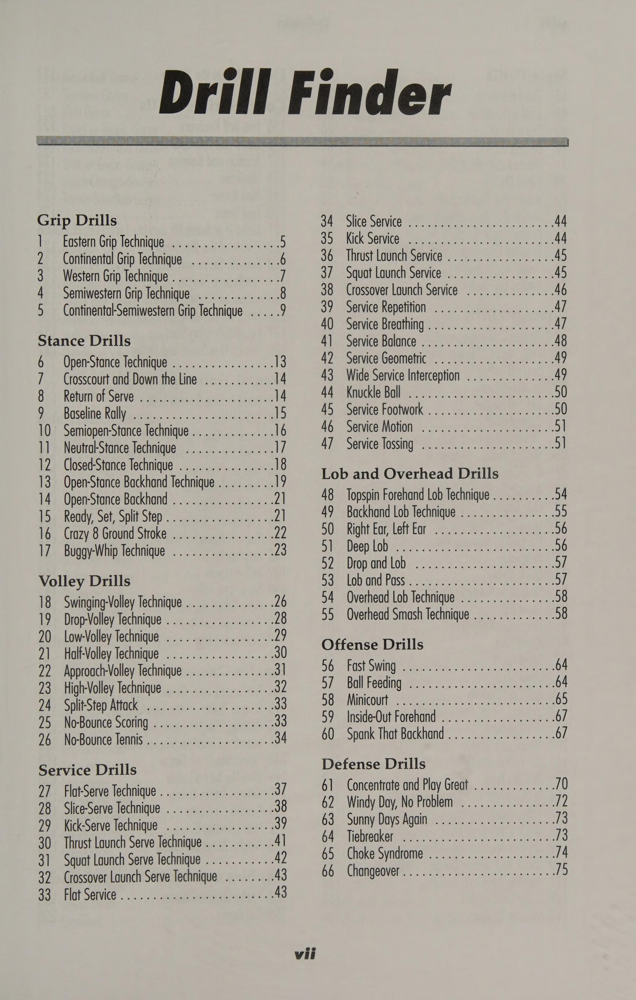

Phần 1: Cấu Trúc Nền Tảng: Kỹ Thuật Cầm Vợt, Thế Đứng & Bài Tập Đánh Cuối Sân
Cuốn sách The Tennis Drill Book của huấn luyện viên Tina Hoskins (do Human Kinetics xuất bản) là tuyển tập kinh điển gồm 245 bài tập được hệ thống hóa khoa học, giúp người chơi và huấn luyện viên xây dựng mọi khía cạnh kỹ chiến thuật từ sơ cấp đến thi đấu chuyên nghiệp. Một buổi tập hiệu quả không bao giờ chỉ đơn thuần là đánh bóng qua lại vô định, mà phải đặt ra mục tiêu đo lường được, áp lực thời gian và không gian cụ thể.
Phần này tập trung vào nền tảng cơ học cốt lõi: Làm chủ các kiểu cầm vợt hiện đại, bốn tư thế đứng căn bản trên sân và các chuỗi bài tập cô lập nhằm nâng cao độ xoáy, độ sâu và tính ổn định cho cú thuận tay cũng như trái tay.
1. Làm Chủ Các Kiểu Cầm Vợt Hiện Đại (Grip Mastery)
Cách bạn cầm vợt quyết định quỹ đạo vung vợt (swing path) và góc mở của mặt vợt tại thời điểm tiếp xúc:
- Kiểu Continental (Cán Vợt Cạnh Số 2): Kiểu cầm toàn năng không thể thay thế cho giao bóng, bắt volley, đánh bóng nửa nảy (half-volley), cắt bóng (slice) và đập bóng trên cao (smash). Khớp gốc ngón trỏ đặt vào cạnh vát số 2.
- Kiểu Eastern Forehand (Cạnh Số 3): Phù hợp cho các cú đánh phẳng (flat) uy lực hoặc xoáy nhẹ, cho phép truyền tải lực tiến thẳng trực diện qua tâm bóng.
- Kiểu Semi-Western Forehand (Cạnh Số 4): Kiểu cầm tiêu chuẩn của quần vợt hiện đại, tạo ra sự cân bằng hoàn hảo giữa lực đẩy về phía trước (penetration) và lực cuộn xoáy lên (topspin).
- Kiểu Western Forehand (Cạnh Số 5): Tạo độ xoáy cuộn cực đại (heavy topspin) để đối phó với những quả bóng nảy cao trên mặt sân đất nện, nhưng đòi hỏi tốc độ vung đầu vợt cực nhanh.
- Chuyển Đổi Continental - Semi-Western: Kỹ năng luân chuyển tức thì giữa hai kiểu cầm là yêu cầu sống còn đối với một tay vợt toàn diện khi chuyển trạng thái từ cuối sân lên lưới.
2. Bốn Thế Đứng Căn Bản Trong Tiếp Cận Bóng (Stance Selection)
Thế đứng quyết định khả năng tích lũy động năng từ mặt đất (ground reaction force) và độ nhanh nhạy khi phục hồi vị trí:
- Thế Đứng Mở (Open Stance): Hai bàn chân song song với lưới. Được sử dụng chủ yếu khi bị đối thủ ép góc ra hai biên hoặc đón những quả bóng nhanh, cho phép người chơi nạp năng lượng vào chân ngoài và xoay hông bộc phát mà không mất thời gian Bước chân bắt chéo (crossover step).
- Thế Đứng Bán Mở (Semi-Open Stance): Bàn chân trước chếch một góc 45 độ so với đường biên dọc. Đây là thế đứng phổ biến và linh hoạt nhất trong các pha đánh bóng cuối sân thông thường.
- Thế Đứng Trung Tính (Neutral Stance): Hai bàn chân xếp thành một đường thẳng vuông góc với lưới, trọng lượng cơ thể bước thẳng về phía mục tiêu. Rất hiệu quả khi tấn công các quả bóng ngắn rơi trong sân.
- Thế Tư thế đứng ngang (đóng) (Closed Stance): Chân trước bước vắt chéo qua thân người. Thường được sử dụng cho các cú cắt bóng trái tay (backhand slice) nhằm giữ cho vai không bị mở sớm.

3. Tuyển Tập Bài Tập Đột Phá Cuối Sân (Groundstroke Drills)
Đặt một dải dây phản quang cách vạch cuối sân đối phương đúng 2 mét. Huấn luyện viên hoặc bạn tập bắn bóng liên tục sang hai cánh. Nhiệm vụ của người chơi là thực hiện 20 cú đánh liên tiếp, trong đó tối thiểu 16 quả phải có điểm rơi nằm giữa dải dây và vạch đáy sân. Bài tập này rèn luyện độ cao an toàn qua lưới (1 đến 1.5 mét) và quỹ đạo bóng đầm sâu.
- Bài Tập 2: Đánh Chéo Sân Kết Hợp Đổi Hướng Dọc Dây (Crosscourt to Down-the-Line Switch): Hai người chơi thực hiện 4 đường bóng chéo sân tốc độ cao để thiết lập nhịp thở, và ở quả thứ 5, người nhận bóng phải lập tức tăng tốc đầu vợt bẻ bóng dọc dây vào ô vuông mục tiêu.
- Bài Tập 3: Đối Phó Bóng Nảy Nặng (Heavy Spin Defense Drill): Bạn tập đứng sát vạch cuối sân đối diện tung ra những quả topspin xoáy cuộn cao. Người chơi phải lựa chọn: Hoặc bước lên đón bóng sớm ngay trên đà nảy (on the rise), hoặc lùi lại một bước thực hiện thế đứng mở để gìm bóng sâu qua lưới.
Phần 2: Hệ Thống Bài Tập Bắt Lưới, Đập Bóng Trên Cao & Giao - Trả Bóng
Khu vực trên lưới và giai đoạn bắt đầu một pha bóng (giao bóng và trả giao) là hai nơi các điểm số được định đoạt nhanh nhất. Trong cuốn sách The Tennis Drill Book, tác giả Tina Hoskins nhấn mạnh rằng không thể phát triển phản xạ bắt lưới nếu chỉ đứng yên một chỗ, và không thể có cú giao bóng ổn định nếu không tập luyện dưới áp lực mục tiêu cụ thể.
Phần này cung cấp các chuỗi bài tập thực chiến chuyên sâu dành cho kỹ năng lên lưới, kỹ thuật bắt volley góc hẹp, cú đập bóng overhead và nghệ thuật thống trị từ cú giao - trả giao bóng.

1. Bài Tập Bắt Lưới Tốc Độ & Phản Xạ Nhanh (Rapid-Fire Volleys)
Để rèn luyện khả năng chặn bóng và phản ứng trong tích tắc của mắt và cổ tay:
- Bài Tập 1: Bắn Bóng Liên Hoàn Cự Ly Gần (Rapid Net Exchanges): Hai người chơi đứng cách lưới chỉ khoảng 2 mét đối diện nhau. Bắt đầu chuyền volley qua lại với tốc độ tăng dần, tuyệt đối không để bóng rơi xuống đất. Mục tiêu là duy trì liên tục 30 lần chạm bóng không lỗi. Bài tập này ép buộc người chơi phải triệt tiêu hoàn toàn động tác mở vợt ra sau.
- Bài Tập 2: Bắt Volley Góc Chéo Hiểm Hóc (Short-Angle Drop Volley): Huấn luyện viên đứng ở vạch cuối sân bắn bóng với lực mạnh. Người chơi trên lưới phải sử dụng cảm giác bàn tay mềm mại để mở nhẹ mặt vợt, gạt quả bóng rơi chéo góc sát vách lưới bên hông đối phương.
- Bài Tập 3: Tiến Lên Đón Quả Volley Đầu Tiên (Approach-and-First-Volley Drill): Người chơi đứng ở vạch cuối sân, chạy lên đón quả bóng ngắn tung cú tiếp cận (approach shot), sau đó lập tức thực hiện bước tách (split-step) ở khu vực chữ T để chặn quả passing shot đầu tiên.


2. Bài Tập Đập Bóng Trên Cao Dưới Áp Lực (Overhead Smash Drills)
Cú smash đòi hỏi sự phối hợp nhịp nhàng giữa thị giác không gian và bước lùi chéo:
- Bài Tập Lùi Chéo Góc Bắt Smash (Drop-Step and Smash): Người chơi xuất phát từ cự ly 1.5 mét cách lưới. Huấn luyện viên tung một quả lốp bóng bổng sâu qua đầu. Người chơi phải ngay lập tức xoay nghiêng người, lùi 4 bước trượt chéo (cross-over steps) về phía sau vạch giao bóng và bật nhảy đập bóng cắm thẳng vào ô mục tiêu.
- Bài Tập Kết Hợp Volley - Lùi Smash (Volley-to-Smash Combo): Chặn một quả volley thấp phía trước, sau đó ngay lập tức bật lùi lại phía sau để thực hiện cú smash trên cao. Bài tập này tái hiện chính xác kịch bản thi đấu thực tế khi đối thủ lốp bóng sau cú volley đầu tiên của bạn.

3. Huấn Luyện Giao Bóng Mục Tiêu & Trả Giao Chủ Động (Serve & Return)

Giao bóng và trả giao bóng chiếm hơn 60% tổng số lần chạm bóng trong một trận đấu đỉnh cao:
- Bài Tập Nón Mục Tiêu (Target Cone Serving Drill): Đặt 3 chiếc nón tại ba vị trí hiểm hóc của mỗi ô giao bóng: Nón góc chữ T (tâm sân), nón góc chữ A (rộng ra biên) và nón khu vực cơ thể (body serve). Người chơi phải giao 50 quả bóng, ghi điểm khi bóng rơi trúng hoặc cách nón không quá 30 cm. Yêu cầu đạt tỷ lệ thành công tối thiểu 70% đối với bóng 1 và 85% đối với bóng 2.
- Bài Tập Trả Giao Bóng Tấn Công (Aggressive Second-Serve Return): Đứng lùi vào trong sân 1 bước so với vị trí thông thường. Ngay khi đối phương tung bóng giao bóng 2, người chơi bước chân vào sân, xoay vai sớm và đè bóng sâu về phía chân yếu của người giao bóng.
- Bài Tập Chip-and-Charge (Cắt Trả Lên Lưới): Sử dụng cú cắt bóng trái tay Continental để gìm bóng sâu và thấp, đồng thời bám theo bóng lao thẳng lên lưới để gây áp lực tâm lý cực lớn lên đối phương.
Phần 3: Chiến Thuật Thực Chiến & Trò Chơi Mô Phỏng Trận Đấu
Một tay vợt có kỹ thuật đẹp mắt vẫn có thể thất bại nếu thiếu khả năng tư duy chiến thuật và sự linh hoạt để thích nghi với các phong cách thi đấu khác nhau. Điểm đặc sắc nhất trong cuốn sách của Tina Hoskins là chương huấn luyện cân bằng lối chơi (Equalizing Game Styles) và các trò chơi mô phỏng trận đấu gay cấn.
Phần này hướng dẫn các kịch bản chiến thuật cụ thể để bẻ gãy mọi đối thủ khó chịu nhất, cùng hệ thống trò chơi tính điểm mô phỏng áp lực thực chiến.
1. Hóa Giải Các Phong Cách Thi Đấu Khó Chịu (Style Equalization)
Mỗi phong cách thi đấu đều có điểm mạnh vượt trội và những tử huyệt cố hữu:
- Khắc Chế Tay Vợt Thích Lao Lên Lưới (Net Rusher Equalization): Không nên cố gắng tung ra những cú passing shot mạo hiểm sát dây ngay lập tức. Thay vào đó, hãy dùng cú cắt bóng thấp xoáy chìm ngay dưới chân họ (dipper), hoặc tung ra cú lốp bóng qua đầu để ép họ phải lùi sâu phòng ngự.
- Khắc Chế Tay Vợt Đánh Bạo Lực (Power Player Equalization): Thay đổi nhịp độ trận đấu liên tục. Sử dụng những cú cắt bóng xoáy ngược chậm, bóng lốp sâu cầu vồng và các đường bóng ngắn để triệt tiêu đà lực của đối thủ, buộc họ phải tự tạo lực và mắc lỗi đánh hỏng.
- Khắc Chế Tay Vợt Phòng Thủ Cù Nhầy (Pusher / Hacker Equalization): Đây là nỗi ám ảnh lớn nhất của các tay vợt phong trào. Bí quyết để đánh bại một tay vợt đẩy bóng là: Tuyệt đối không nôn nóng tấn công bừa bãi. Hãy kéo họ lên lưới bằng một cú bỏ nhỏ ngắn, sau đó ung dung tung cú passing shot hoặc lốp bóng vào khoảng trống mênh mông phía sau lưng họ.
- Đối Đầu Tay Vợt Cuối Sân Bền Bỉ (Baseliner Counterpuncher): Tận dụng các góc đánh rộng để mở sân, phối hợp luân chuyển giữa các cú đánh sâu ép góc và những pha dâng cao chiếm lĩnh khu vực gần lưới để kết liễu điểm số.
2. Trò Chơi Mô Phỏng Trận Đấu Đơn (Singles Simulation Games)
Các trò chơi có điều kiện giúp cầu thủ rèn luyện bản lĩnh thi đấu dưới áp lực điểm số khắc nghiệt:
- Trò Chơi 21 Điểm Cuối Sân (21-Point Baseline War): Hai người chơi thi đấu đánh bóng từ vạch cuối sân. Điểm số chỉ được tính khi đường bóng kéo dài từ 6 lần chạm bóng trở lên. Nếu ai đánh hỏng trước 6 lần chạm bóng, người đó bị trừ điểm. Trò chơi này rèn luyện tính kiên trì và kỷ luật không đánh bóng ẩu.
- Trò Chơi Chỉ Có Giao Bóng Hai (Second-Serve Only Game): Cả hai bên chỉ được phép sử dụng một lần giao bóng duy nhất (tương đương quả giao bóng hai). Người giao bóng phải học cách đưa bóng vào sân an toàn nhưng có độ xoáy và vị trí hiểm, trong khi người trả giao bóng phải tìm cách trừng phạt ngay lập tức.
- Trò Chơi Tấn Công Bắt Buộc (Sink or Swim Attack Game): Người chơi nào có cơ hội đánh bóng từ bên trong vạch cuối sân (short ball) bắt buộc phải dâng lên lưới sau cú đánh đó. Nếu không lên lưới, người đó sẽ bị xử thua điểm ngay lập tức.

3. Bài Tập Chiến Thuật Đánh Đôi (Doubles Drills & Formations)


Đánh đôi đòi hỏi sự ăn ý và phối hợp chặt chẽ giữa hai thành viên trong đội:
- Bài Tập Đội Hình Chữ I (I-Formation Drill): Người đứng lưới ngồi thụp xuống ngay trên vạch giữa sân (khu vực chữ T). Sau khi đồng đội giao bóng, người đứng lưới lập tức bật dậy di chuyển sang trái hoặc phải để bắt bài cú trả bóng chéo sân của đối thủ.
- Bài Tập Passing-Shot Medusa: Một người chơi ở cuối sân phải đối đầu với hai người bắt lưới cùng lúc. Người đánh đơn phải liên tục tìm cách luồn bóng qua khe hở giữa hai người (the middle seam) hoặc tung cú lốp bóng qua đầu người đứng lưới yếu hơn.
Phần 4: Thể Lực, Độ Bền, Duy Trì Phong Độ & Huấn Luyện Nhóm
Một kế hoạch rèn luyện hoàn hảo không thể thiếu khía cạnh thể lực và sức bền chuyên biệt. Quần vợt là môn thể thao ngắt quãng cường độ cao (high-intensity intermittent sport), đòi hỏi các đợt bứt tốc ngắn, đổi hướng đột ngột liên tục trong suốt 2 đến 4 giờ thi đấu. Trong phần cuối của cuốn sách, Tina Hoskins giới thiệu các bài tập thể lực trên sân không cần tạ nặng và các trò chơi huấn luyện nhóm đầy lôi cuốn.
Phần này tập trung vào bài tập phát triển sức bền tim mạch, độ nhanh nhẹn của bộ chân, chế độ duy trì thể lực trong mùa giải và phương pháp tập luyện với tường chắn bóng.
1. Rèn Luyện Sức Bền Tim Mạch Chuyên Biệt (Tennis-Specific Endurance)
Các bài tập thể lực được thiết kế ngay trên sân quần vợt để gắn liền với không gian thi đấu:
- Bài Tập Chạy Con Thoi 5 Tuyến (Court Suicide Drill): Xuất phát từ vạch biên đôi bên này, bứt tốc chạm vạch biên đơn, quay lại chạm vạch biên đôi; bứt tốc chạm vạch giữa sân, quay lại; chạm vạch biên đơn đối diện rồi bứt tốc toàn lực qua vạch biên đôi đối diện. Thực hiện 5 hiệp với thời gian nghỉ giữa hiệp là 45 giây.
- Bài Tập Cánh Quạt (The Fan Drill): Đặt 5 quả bóng ở 5 vị trí: Hai góc giao bóng, hai góc cuối sân và điểm giữa lưới. Người chơi xuất phát từ tâm vạch cuối sân, chạy lên nhặt từng quả bóng đem về vị trí xuất phát với tốc độ tối đa. Bài tập này mô phỏng các pha rượt đuổi bóng ngắn và bóng sâu.
- Chạy Bứt Tốc Bẻ Góc Hình Chữ X (X-Drill Agility): Di chuyển chéo sân từ góc cuối sân phải lên góc lưới trái, trượt ngang sang góc lưới phải, sau đó lùi chéo về góc cuối sân trái. Luân chuyển liên tục để rèn luyện sự linh hoạt của khớp cổ chân và hông.
2. Duy Trì Thể Lực Trong Mùa Giải (In-Season Maintenance)
Khi bước vào mùa giải thi đấu liên tục, mục tiêu không còn là tăng cơ bắp mà là phòng ngừa chấn thương và bảo tồn năng lượng:
- Bảo Vệ Khớp Vai Và Cơ Xoay (Rotator Cuff Care): Thực hiện các bài tập xoay trong và xoay ngoài với dây kháng lực nhẹ sau mỗi buổi tập để củng cố nhóm cơ chóp xoay, ngăn ngừa hội chứng viêm gân do giao bóng quá nhiều.
- Kéo Giãn Cơ Chủ Động (Dynamic and Static Stretching): Khởi động trước trận đấu bằng các bài kéo giãn động (chân lăng, xoay khớp hông), và kết thúc buổi đấu bằng kéo giãn tĩnh sâu cho cơ gân kheo, cơ bắp chuối và cơ lưng dưới.
- Phục Hồi Thần Kinh Cơ: Đảm bảo giấc ngủ đủ 8 tiếng và bù đủ nước cùng các chất điện giải (natri, kali, magie) nhằm chống chuột rút cơ bắp.

3. Trò Chơi Huấn Luyện Nhóm & Luyện Tập Với Tường (Group Games & Wall Drills)
Tạo không khí tập luyện tràn đầy năng lượng và phát triển khả năng tự tập luyện một mình:
- Trò Chơi Vua Sân Đấu (King of the Court): Hai người chơi giữ vị trí "nhà vua" ở một bên sân. Các cặp thách đấu xếp hàng ở bên kia sân lần lượt bước vào tranh tài trong các pha bóng ngắn. Đội nào ghi liên tiếp 2 điểm sẽ lật đổ nhà vua để sang chiếm lĩnh vị trí thống trị. Trò chơi này kích thích tinh thần cạnh tranh và bản lĩnh giải quyết điểm then chốt.
- Thử Thách 100 Cú Đánh Với Tường (The 100-Ball Wall Challenge): Bức tường là người bạn tập trung thành và khắt khe nhất. Đứng cách tường 5 mét, kẻ một dải băng ngang tầm lưới (0.914 mét). Thực hiện liên tục 100 cú đánh bóng nảy một lần qua dải băng không hỏng. Bức tường trả bóng về nhanh gấp đôi đối thủ thông thường, giúp tốc độ phản xạ của bạn tăng vọt chỉ sau vài tuần rèn luyện.